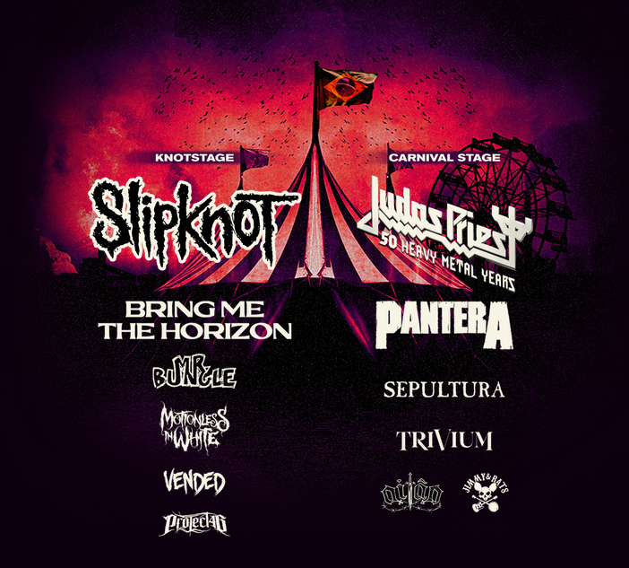
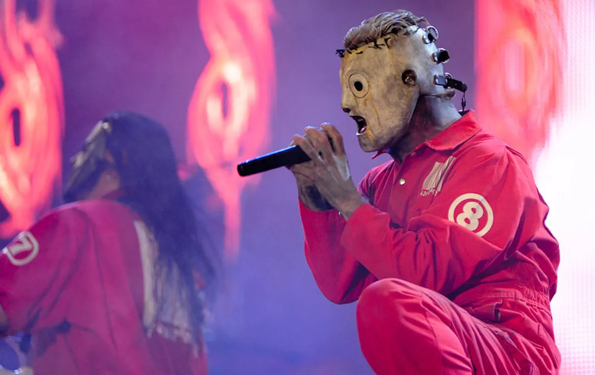

O que é a Knotfest?

Mais que um grande festival, o KNOTFEST é um acontecimento, um evento que celebra
um estilo de vida e a cultura do rock e do metal. A música é o pulso do KNOTFEST,
uma reunião das maiores e mais pesadas bandas do mundo, um fenômeno criado pela
banda de metal multiplatinada SLIPKNOT.
Lançado em 2012, o festival se estabeleceu nos Estados Unidos e se expandiu para
todo o mundo, com edições no Japão, Colômbia e França. Agora, o festival chegará
pela primeira vez ao Brasil, com a estreia do KNOTFEST no Sambódromo do Anhembi em
São Paulo, no dia 18 de dezembro de 2022.
A primeira edição brasileira do festival contará com 12 horas de música, dois grandes
palcos, o KNOTFEST Museum, área de food truck, área de barbecue com churrasco sendo
feito na hora, Loja de Merchandising e uma Arena Radical cheia de surpresas para todos!
A edição brasileira do KNOTFEST é patrocinada pela Ame Digital e é a realização de uma
parceria entre 30 Entertainment e 5B Artists+Media.
Clientes Ame podem parcelar os ingressos em até 6x sem juros, além de contar com uma
fila exclusiva na entrada do evento.
Para mais informações sobre o KNOTFEST no Brasil, acesse:

Tendo como headliner o SLIPKNOT, elenco histórico jamais reunido no Brasil
vai contar ainda com Bring Me The Horizon, Sepultura, Trivium, Mr Bungle,
Motionless in White, Vended, Project46 e também Oitão e Jimmy & Rats
O maior festival hard rock e metal no mundo, que celebra um estilo de vida e a cultura do rock e do metal, o KNOTFEST chega ao Brasil pela primeira vez e já está com seu lineup completo!
Além do headliner do festival, SLIPKNOT e onze outras bandas estão confirmadas para se apresentar no Sambódromo do Anhembi, em 18 de dezembro. Para completar a escalação do primeiro
KNOTFEST Brasil, o festival acaba de anunciar mais duas atrações imperdíveis para os amantes do rock e do metal: os britânicos do Judas Priest, considerado um dos precursores do
heavy metal moderno e um dos grupos mais influentes na história do gênero, que estarão comemorando com os fãs brasileiros uma história de 50 anos da banda, interrompida por causa
da pandemia, e retomam agora em grande estilo, conforme atesta o vocalista Rob Halford: “Defendendo a fé do heavy metal por cinquenta anos, o Priest está de volta!” A outra atração
confirmada é uma reunião histórica: o Pantera, uma das bandas de maior sucesso no metal durante os anos 90, com músicas incrivelmente marcantes e donos de uma originalidade sem
precedentes, está sendo reunida por Phil Anselmo e Rex Brown para uma turnê mundial em 2023 que irá celebrar os 20 anos da última apresentação da banda. O público presente ao KNOTFEST
vai poder conferir esse reencontro em primeira mão. Além das duas atrações internacionais, o festival também acaba de anunciar duas bandas da cena nacional: o Oitão e Jimmy & Rats.
Ainda existem ingressos disponíveis para o festival à venda em: Eventim.com.br. Também serão disponibilizados para venda pacotes de experiências VIP*, com acessos a áreas premium
e também a merchandising exclusivo. Mais informações sobre esses pacotes estarão disponíveis no site da Eventim (*sujeitos à disponibilidade).